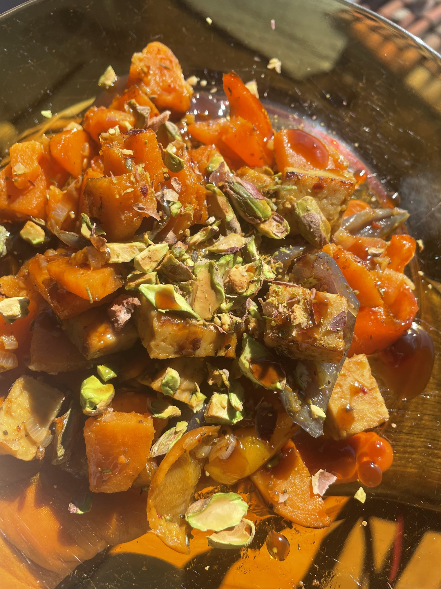

Chalota, pimientos, boniato y tempeh a la sartén con picada de pistacho
Ingredientes
2×
- aceite de oliva
- 2 chalotas
- 4 pimientos pequeños
- 1 boniato
- 200 g de tempeh
- agua
- un puñado de pistachos

Preparación
Paso 1
Sofreír en una sartén con aceite de oliva 2 chalotas en tiras, 4 pimientos pequeños, 1 boniato en dados y 200 g de tempeh en dados.
Paso 2
Cubrir con agua y cocer hasta que la absorba y el boniato esté hecho. Salpimentar.
Paso 3
Servir con una picada de un puñado de pistachos por encima.